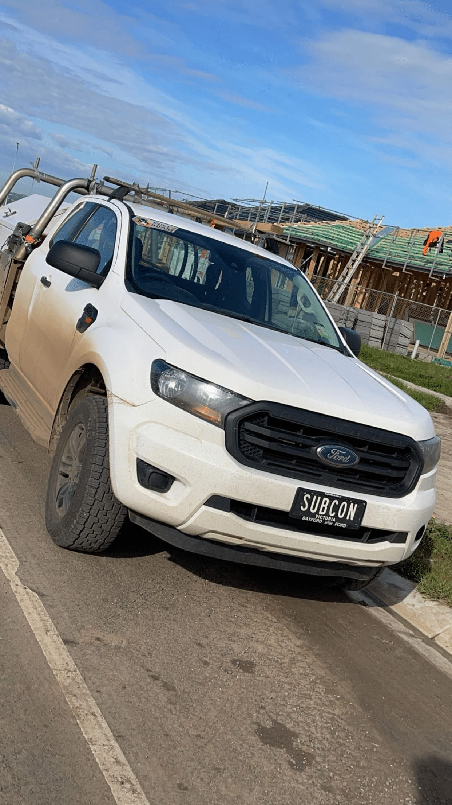
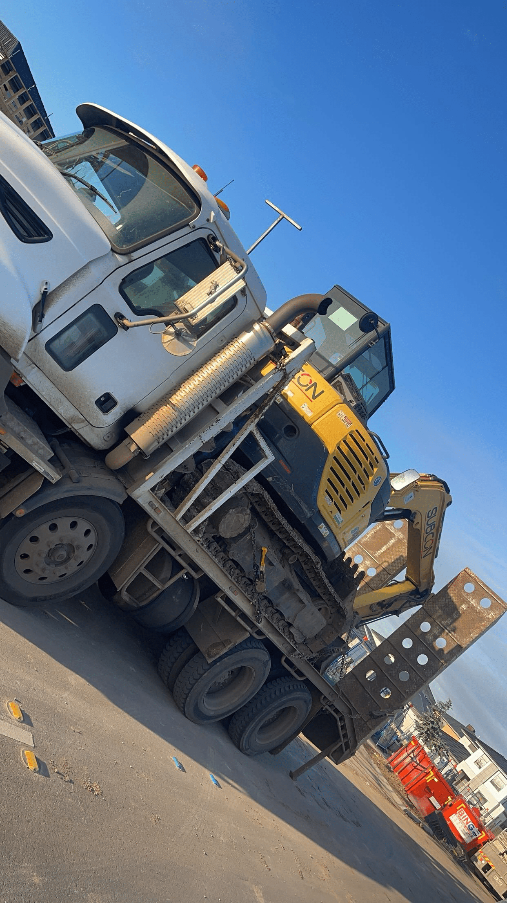
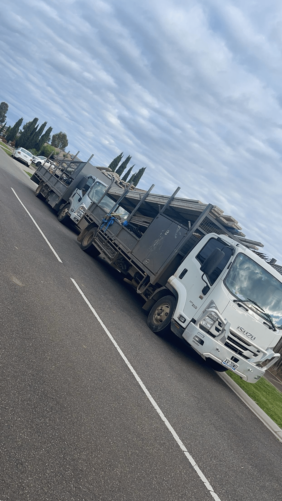
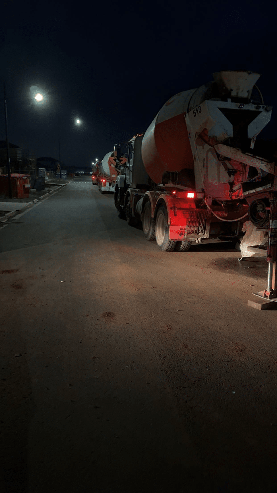
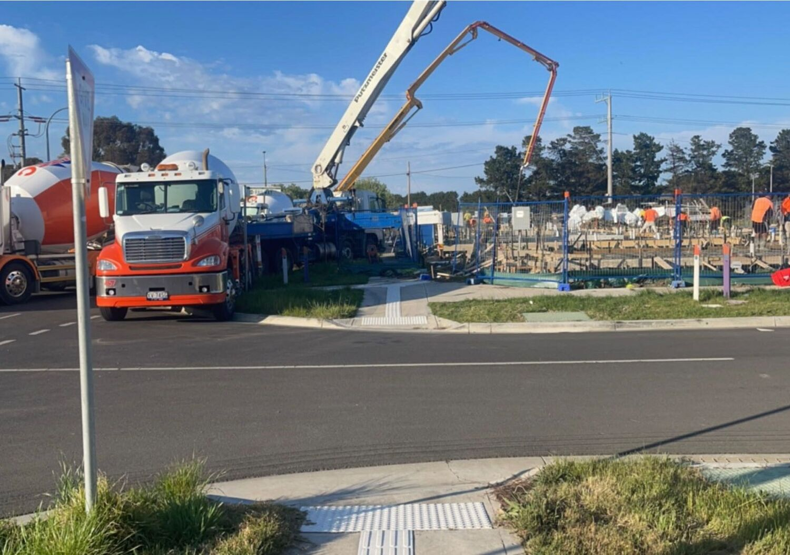
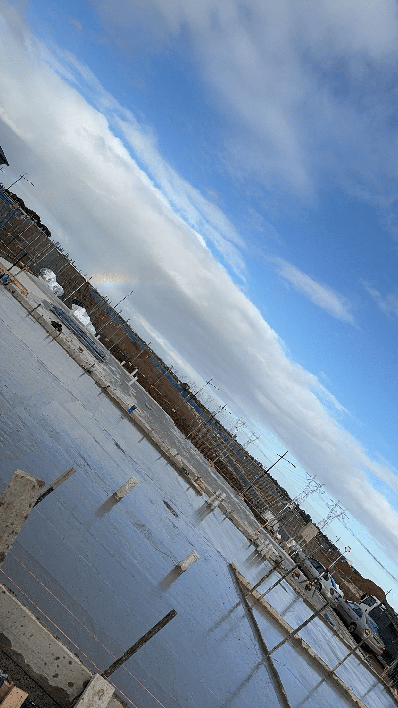
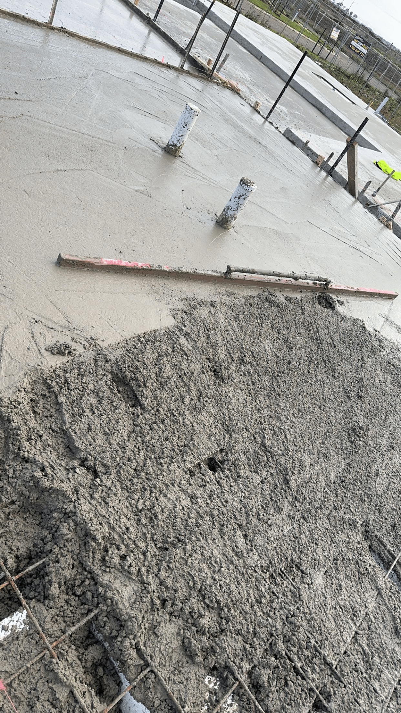

-1500h.jpeg)

Project gallery
The work speaks for itself.
A selection of existing Subcon project photography showing residential slab construction, site preparation, reinforcement, pours and finished concrete work.
On siteReal work.
Real work.
Real projects.
These images are from the existing Subcon gallery. Select any image to view it larger.










What you are seeing
Preparation through completion.
The gallery reflects the same residential slab stages described throughout Subcon's service material—from site and base work through reinforcement, concrete placement and finishing.
01Site & base preparation
02Reinforcement & slab stages
03Pouring & finished work
Your project
Ready to start the conversation?
Contact Subcon directly about residential slab and concrete requirements across Melbourne and Ballarat.